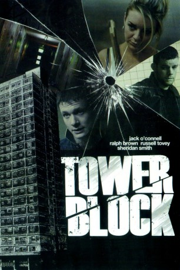

#3484 Tower Block
 gesehen am 17.04.2016
gesehen am 17.04.2016
 
 IMDB-Wertung: 5.9 / 10
IMDB-Wertung: 5.9 / 10  Metascore: 0
Metascore: 0 
Vor einem Jahr wurde in einem der Hochhäuser im Serenity Tower Block ein schrecklicher Mord verübt: Bei dem Opfer handelte es sich um den Bewohner Jimmy (Ralph Laurila). Obwohl einige Nachbarn damals Zeugen des Verbrechens waren, blieben sie aus Angst vor der Rache des Killers stumm und sagten nicht bei der Polizei aus, die daraufhin gezwungen war, die Ermittlungen einzustellen. Nun sinnt ein unbekannter Scharfschütze auf Rache und nimmt einen Zeugen nach dem anderen ins Visier und tötet diese für ihr Stillschweigen. Die Bewohner Becky (Sheridan Smith), Kurtis (Jack O'Connell) und Neville (Ralph Brown) wollen flüchten, doch der Killer hat im gesamten Haus tödliche Fallen platziert. Ihnen bleibt nichts anderes übrig, als sich dem unbekannten Rächer zu stellen.
Jahr: 2012
Dauer: 90 Minuten
FSK: 18
Land: England Studio: UFATonspuren: DTS - ,
Untertitel: Deutsch,
Auflösung: 1080p (1920x816) Größe: 5498 MB
Genre: Thriller
Regisseur: James Nunn, Ronnie Thompson
Drehbuch: Martin Zandvliet
Soundtrack:
Darsteller:
 Sheridan Smith als Becky
Sheridan Smith als Becky Ralph Brown als Neville
Ralph Brown als Neville Russell Tovey als Paul
Russell Tovey als Paul Jack O'Connell als Kurtis
Jack O'Connell als Kurtis- Jill Baker als Violet
- Julie Graham als Carol
 Christopher Fulford als Kevin
Christopher Fulford als Kevin- Harry McEntire als Daniel
- Montserrat Lombard als Jenny
- Michael Legge als Jeff
 Jamie Thomas King als Ryan
Jamie Thomas King als Ryan Steven Cree als DC Devlin
Steven Cree als DC Devlin- James Weber Brown als Brian
- Jordan Long als Ormond
- Kane Robinson als Mark
 Nabil Elouahabi als Gary
Nabil Elouahabi als Gary- Ralph Laurila als Jimmy
- Tony Jayawardena als Eddie
- Loui Batley als Amy
- Ceyda Mustafa als Little girl
- Edward Baker als Little boy
- Vinny Banton als Police officer
- Lee Carroll als Police officer
- John Benton als Paramedic
- Sophie Nunn als Paramedic
- Caroline Artiss als Liz
- James Nunn als Police Officer , uncredited
Datei: X:\FSK18-2012\Tower Block (2012, FSK18, 1920x816).mkv seit 13.04.2016
Festplatte: FSK18
 Es gibt insgesamt 26 Filme in der Gruppe 'FSK18-2012'
Es gibt insgesamt 26 Filme in der Gruppe 'FSK18-2012'